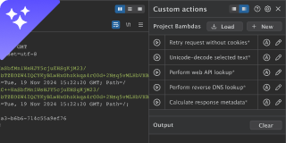
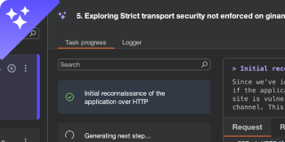
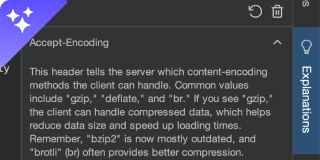
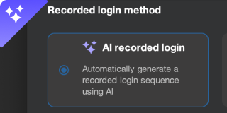
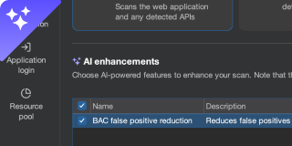
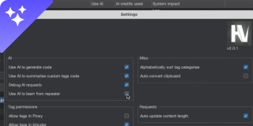
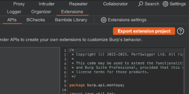

Burp AI can now help you investigate Repeater tabs. Use custom prompts to carry out a huge range of tasks - from identifying risks to suggesting next steps in your testing workflow.
Find out more  New ProfessionalEnhance Burp Repeater by building custom actions that extract and analyze HTTP data - now with the option to integrate AI for more intelligent workflows.
Find out more  New ProfessionalAutomatically follow up on vulnerabilities to save time, reduce blind spots, and uncover deeper insights.
Find out more  New ProfessionalBurp AI helps you understand unfamiliar web technologies with quick, AI-generated explanations to keep you focused on testing.
Find out more  New ProfessionalUse Burp AI to automatically generate recorded login sequences, helping you to reduce setup time and avoid scan failures.
Find out more  New ProfessionalBurp AI automatically checks broken access control issues to minimize false positives, reducing noise and improving scan accuracy.
Find out more  New ProfessionalThe Montoya API now enables you to interact with AI via our purpose-built platform, helping you to build smarter extensions that analyze input and provide intelligent responses.
Find out more  New Professional CommunityKickstart your extension development with our ready-to-go project. Just download the project from Extensions > API, open, and start writing - no setup required.
Find out more ProfessionalThe PortSwigger community is now open on Discord. Join for access to exclusive events, feature previews, research releases, and to hang out with Burp Suite developers.
Join for freeRegister for free to access learning materials and interactive challenges designed by our leading researchers.
Learn about Burp Suite's powerful range of tools with our interactive guides, videos, and documentation.
Follow us on X for our latest research, product information, and to learn from other Burp Suite users.